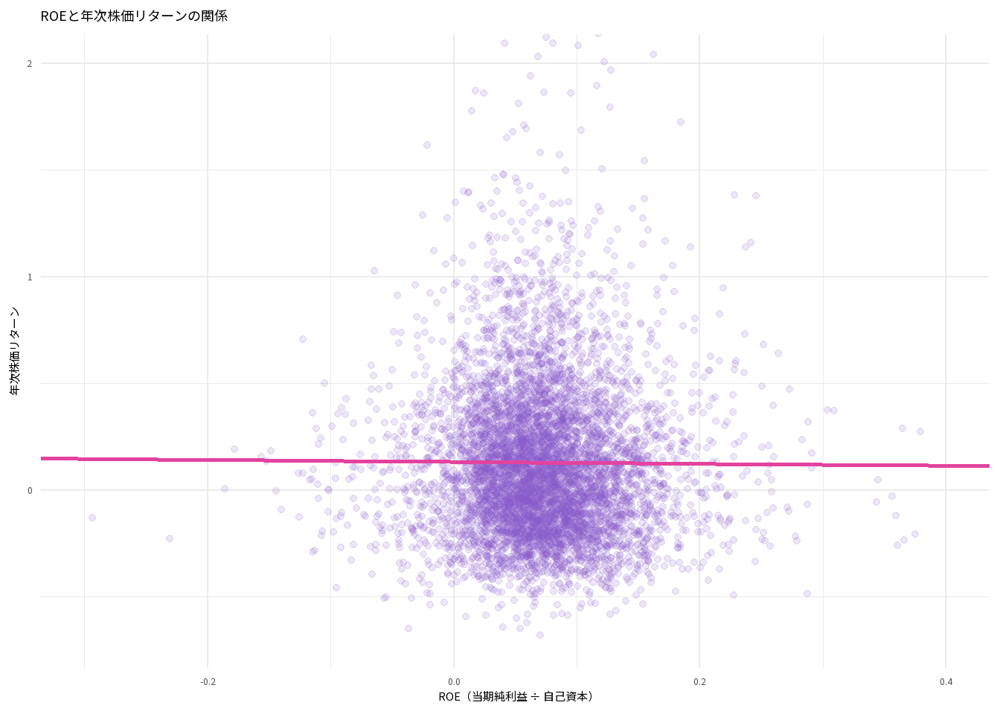
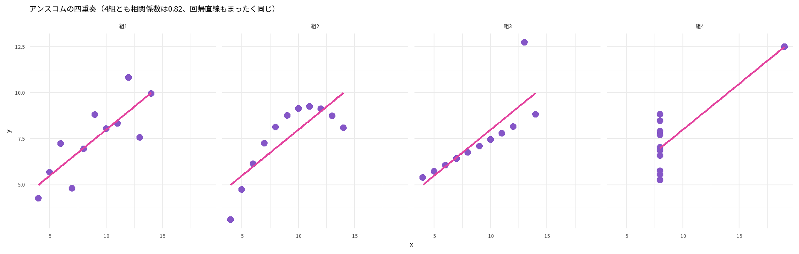
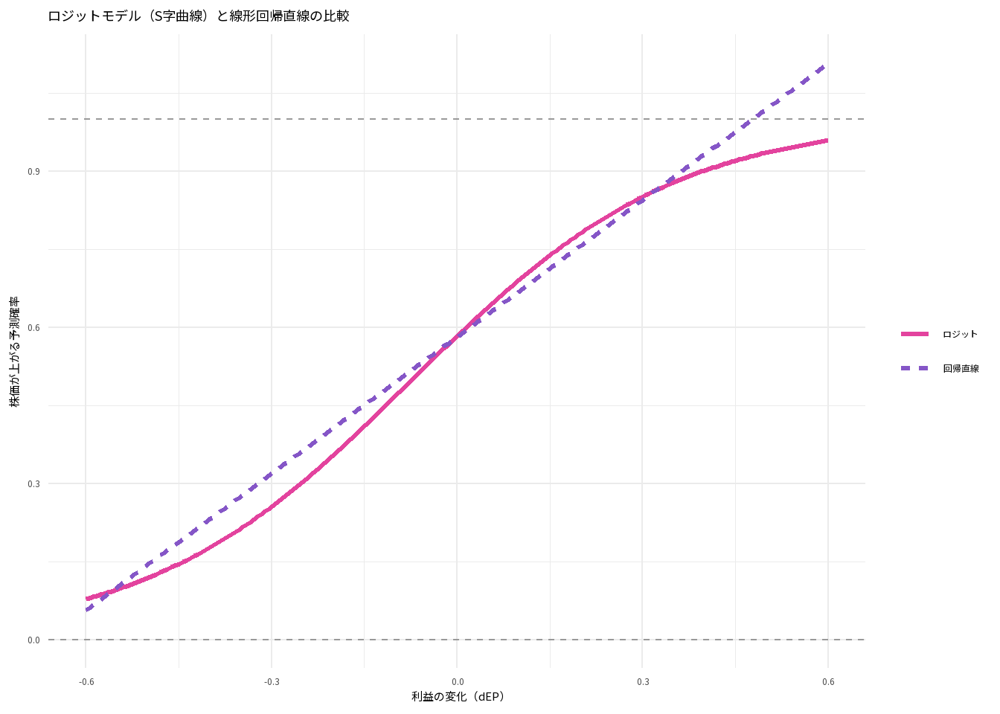
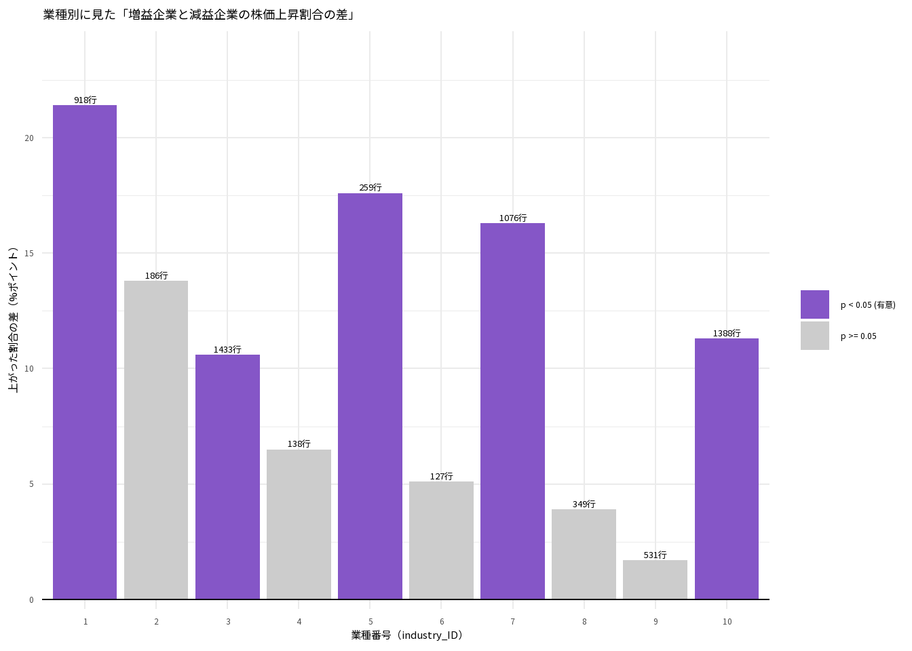

pacman::p_load(tidyverse, modelsummary, ggthemes, showtext, patchwork)
sysfonts::font_add_google("Noto Sans JP", "noto")
showtext::showtext_auto()
options(scipen = 999) # 指数表記（1e+06など）を無効にする2026年10月30日(金) プレゼミ
データの準備
今回は「利益が増えた会社の株価は上がるのか」という実証会計学の出発点となった問いに答えるために、年次の財務データと月次の株価データの2つのデータを組み合わせて分析します。
moodle+Rの「プレゼミ」から、ch04_financial_data.csv（財務データ）とch05_stock_data.csv（株価データ）の2つのファイルをダウンロードし、前回と同様にpresemiフォルダの中のdataフォルダに保存してください。 Positronを立ち上げ、「ファイル」->「フォルダを開く」でpresemiフォルダを開き、左側の「Explorer」にdataフォルダと2つのCSVファイルが表示されていることを確認します。
まずは、今回の分析で使用するパッケージを読み込みます。前回導入したpacmanパッケージのp_load()関数を使えば、まだインストールされていないパッケージがあっても自動でインストールと読み込みを行ってくれます。
もし新しいパソコンなどでpacman自体がまだインストールされていない場合は、最初の1回だけコンソールでinstall.packages("pacman")を実行してください。
それでは、2つのCSVファイルをread_csv()関数で読み込み、それぞれfin（財務データ）とstock（株価データ）という名前のオブジェクトに格納します。
fin <- read_csv("data/ch04_financial_data.csv") # 財務データ（年次）
stock <- read_csv("data/ch05_stock_data.csv") # 株価データ（月次）読み込んだ2つのデータの中身をglimpse()関数で確認してみます。
glimpse(fin)Rows: 7,920
Columns: 11
$ year <dbl> 2015, 2016, 2017, 2018, 2019, 2020, 2015, 2016, 2017, 2018…
$ firm_ID <dbl> 1, 1, 1, 1, 1, 1, 2, 2, 2, 2, 2, 2, 3, 3, 3, 3, 3, 3, 4, 4…
$ industry_ID <dbl> 1, 1, 1, 1, 1, 1, 1, 1, 1, 1, 1, 1, 1, 1, 1, 1, 1, 1, 1, 1…
$ sales <dbl> 5261.40, 5948.96, 6505.06, 6846.38, 7572.24, 7537.63, 3505…
$ OX <dbl> 437.49, 564.14, 691.18, 751.29, 958.53, 778.37, 45.82, 51.…
$ NFE <dbl> NA, 50.667498, 29.543157, 86.486500, 298.049774, -65.45877…
$ X <dbl> 286.64, 513.48, 661.64, 664.80, 660.48, 843.83, 40.07, 49.…
$ OA <dbl> 13005.55, 13865.58, 13952.58, 18818.48, 18190.00, 20462.86…
$ FA <dbl> 3543.43, 4642.16, 7743.99, 7284.72, 9735.13, 10274.25, 225…
$ OL <dbl> 4372.96, 4534.22, 5111.22, 5137.28, 5487.96, 5371.38, 1840…
$ FO <dbl> 2480.72, 3959.70, 6159.02, 10123.91, 11362.22, 13772.15, 2…財務データfinは7,920行・11列のデータです。含まれている主な変数の意味は以下の通りです（金額の単位はすべて百万円）。
year：会計年度firm_ID：企業番号（1515社）industry_ID：業種番号（1〜10の10業種）sales：売上高OX：営業利益（Operating Income）NFE：純金融費用（Net Financial Expense）X：当期純利益（Earnings）OA,FA：営業資産（Operating Assets）、金融資産（Financial Assets）OL,FO：営業負債（Operating Liabilities）、金融負債（Financial Obligations）
続いて、株価データstockの中身も確認します。
glimpse(stock)Rows: 95,040
Columns: 9
$ year <dbl> 2015, 2015, 2015, 2015, 2015, 2015, 2015, 2015,…
$ month <dbl> 1, 2, 3, 4, 5, 6, 7, 8, 9, 10, 11, 12, 1, 2, 3,…
$ month_ID <dbl> 1, 2, 3, 4, 5, 6, 7, 8, 9, 10, 11, 12, 13, 14, …
$ firm_ID <dbl> 1, 1, 1, 1, 1, 1, 1, 1, 1, 1, 1, 1, 1, 1, 1, 1,…
$ stock_price <dbl> 954, 960, 1113, 1081, 1317, 1366, 1353, 1209, 1…
$ DPS <dbl> 0, 0, 0, 0, 0, 29, 0, 0, 0, 0, 0, 29, 0, 0, 0, …
$ shares_outstanding <dbl> 2422000, 2422000, 2422000, 2422000, 2422000, 24…
$ adjustment_coefficient <dbl> 1, 1, 1, 1, 1, 1, 1, 1, 1, 1, 1, 1, 1, 1, 1, 1,…
$ R_F <dbl> 0.00065068255, 0.00058340985, 0.00061144232, 0.…株価データstockは95,040行・9列のデータです。含まれている主な変数の意味は以下の通りです。
year,month：年・月month_ID：通し月番号（2015年1月＝1 〜 2020年12月＝72）firm_ID：企業番号stock_price：月末の株価（円）DPS：1株あたり配当（円）shares_outstanding：発行済株式数（株）adjustment_coefficient：株式分割などの調整係数R_F：無リスク利子率
ここで最も重要なのは、2つのデータの「1行が何を表しているか（データの粒度）」が異なるという点です。
fin（財務データ）：1社1年 ＝ 1行（7,920行）stock（株価データ）：1社1年 ＝ 12行（1か月1行なので、12倍の95,040行）
第1部：データの結合
やってはいけない結合（1対多の結合事故）
2つのデータに共通するキー（企業番号firm_IDと年year）を使ってデータを横につなげるには、tidyverse（dplyr）のleft_join()関数を使います。 しかし、粒度が異なるデータをそのまま結合すると、大きな事故が起きます。まずは失敗例を見てみましょう。
bad <- fin |>
left_join(stock, by = c("firm_ID", "year")) # 企業番号と年でそのまま結合する
nrow(fin) # 結合前の行数[1] 7920nrow(bad) # 結合後の行数[1] 95040結合前は7,920行だったデータが、結合後には12倍の95,040行に増えてしまいました。 finの1行（たとえば企業1の2015年度の決算データ）に対して、stock側には「企業1の2015年1月〜12月」の12行が存在するため、同じ決算データが12か月分コピーされてしまったのです。
恐ろしいことに、この結合を実行してもRはエラーも警告も出しません。このまま回帰分析を行うと、同じ企業の同じ年の決算を12回重複して数えることになり、サンプルサイズが12倍に水増しされて誤った分析結果（不当に小さいp値など）が出てしまいます。
データの結合の鉄則： 結合（join）を行う前には、必ず両方のデータを「同じ粒度（ここでは1社1年＝1行）」にそろえる必要があります。また、結合の前後でnrow()を使って行数が意図せず増えていないかを必ず検算してください。
① 月次リターンを計算する
正しく結合するために、まず月次の株価データstockを使って月次株式リターンを計算し、それを年次に集計して「1社1年＝1行」の形にまとめます。
ある月の株式リターンr_{\text{月}}は、先月末に株を買い、今月末まで保有したときに得られる収益率として、次の式で計算します。
r_{\text{月}} = \frac{\text{今月の株価} \times \text{調整係数} + \text{配当}}{\text{先月の株価}} - 1
stock_m <- stock |>
arrange(firm_ID, month_ID) |> # 会社ごとに、月の順番に並べ替える
group_by(firm_ID) |> # 会社ごとにグループ化する
mutate(
ret = (stock_price * adjustment_coefficient + DPS) / lag(stock_price) - 1
) |>
ungroup() # グループ化を解除する
head(stock_m)# A tibble: 6 × 10
year month month_ID firm_ID stock_price DPS shares_outstanding
<dbl> <dbl> <dbl> <dbl> <dbl> <dbl> <dbl>
1 2015 1 1 1 954 0 2422000
2 2015 2 2 1 960 0 2422000
3 2015 3 3 1 1113 0 2422000
4 2015 4 4 1 1081 0 2422000
5 2015 5 5 1 1317 0 2422000
6 2015 6 6 1 1366 29 2422000
# ℹ 3 more variables: adjustment_coefficient <dbl>, R_F <dbl>, ret <dbl>このコードでは、以下の重要な処理を行っています。
arrange(firm_ID, month_ID)：データを企業番号順・月順に正しく並べ替えます。時系列の計算をする前には必ず並べ替えを行います。group_by(firm_ID)：企業ごとに計算を区切ります。これを行わないと、企業1の最後の月（2020年12月）の株価を、次の行にある企業2の最初の月（2015年1月）の「先月の株価」として使ってしまいます。lag(stock_price)：lag()は「1つ前の行の値」を取り出す関数です。group_by(firm_ID)と組み合わせることで、同じ企業の「先月の株価」を取得できます。なお、各企業の最初の月（2015年1月）には「先月の株価」が存在しないため、retは欠損値（NA）になります。adjustment_coefficient（調整係数）：企業が株式分割（たとえば1株を2株に分割）を行うと、企業の価値が変わっていなくても株価は半分になります。調整係数を掛けることで、株式分割による見かけ上の株価下落を補正します。
② 年ごとにまとめる（年次リターンと時価総額）
次に、月次リターンを1年分（12か月分）まとめて、年次リターンRと年末の時価総額MVを計算します。グループごとにデータを集計して1行にまとめるには、group_by()とsummarise()を組み合わせて使います。
stock_y <- stock_m |>
filter(!is.na(ret)) |> # retが欠損値（NA）ではない行だけを残す
group_by(firm_ID, year) |> # 企業ごと・年ごとにグループ化する
summarise(
n_month = n(), # その年に何か月分のデータがあるか
R = prod(1 + ret) - 1, # 年次リターン（複利）
MV = last(stock_price) * last(shares_outstanding) / 1e6, # 年末の時価総額（百万円）
.groups = "drop" # 集計後にグループ化を解除する
)
head(stock_y)# A tibble: 6 × 5
firm_ID year n_month R MV
<dbl> <dbl> <int> <dbl> <dbl>
1 1 2015 11 0.612 3577.
2 1 2016 12 0.997 6883.
3 1 2017 12 0.688 11377.
4 1 2018 12 -0.214 8695.
5 1 2019 12 0.647 13958.
6 1 2020 12 -0.284 9709.なぜ年次リターンは足し算ではなく掛け算なのか？ たとえば1月に株価が+10\%上がり（1.1倍）、2月に-10\%下がった（0.9倍）とします。足し算すると+10\% + (-10\%) = 0\%ですが、実際には100円の株が110円になり、そこから10%下がって99円になるため、通算リターンは1.1 \times 0.9 - 1 = -0.01（-1\%）です。 prod()は要素をすべて掛け合わせる関数で、prod(1 + ret) - 1と書くことで複利の年次リターンを正確に計算できます。
また、時価総額（Market Value）は「株価 × 発行済株式数」で計算されます。last()はグループ内の最後の行（ここでは12月末）の値を取り出す関数です。財務データの単位（百万円）に合わせるため、1e6（100万）で割っています。
集計後のデータstock_yが本当に「1社1年＝1行」になっているか、重複がないかを検算します。
stock_y |>
count(firm_ID, year) |>
filter(n > 1)# A tibble: 0 × 3
# ℹ 3 variables: firm_ID <dbl>, year <dbl>, n <int>結果が0 rows（0行）となったので、同じ企業・同じ年の組み合わせが2行以上あるデータは1つもなく、きれいに「1社1年＝1行」にそろったことが確認できました。
③ 2つのデータをつなぐ
両方のデータが「1社1年＝1行」にそろったので、left_join()で結合します。 このとき、relationship = "one-to-one"という引数を指定しておくと、万が一データが1対1になっていなかった場合にRがエラーを出して止めてくれるため、先ほどのような「12倍の事故」を防ぐことができます。
df <- fin |>
left_join(
stock_y,
by = c("firm_ID", "year"),
relationship = "one-to-one" # 1対1の結合でなければエラーで止める
)
nrow(fin) # 結合前の行数[1] 7920nrow(df) # 結合後の行数[1] 7920結合前と結合後の行数がどちらも7,920行で一致していることが確認できました。
代表的な結合（join）関数の違い：
left_join(x, y)：左側のデータxの行をすべて残し、キーが一致するyの列を結合する（一致しない部分はNAになる）。inner_join(x, y)：xとyの両方に存在する行だけを残す。full_join(x, y)：xとyのどちらか一方にでも存在する行をすべて残す。
分析に使う変数を作成する
前回の授業で学んだ通り、企業規模のばらつきや外れ値の影響を抑えるためには、金額をそのまま使うのではなく「比率にする」ことや「対数をとる」ことが有効です。 そこで、結合したデータdfから分析用の変数を作成します。
df <- df |>
arrange(firm_ID, year) |>
group_by(firm_ID) |>
mutate(
lag_MV = lag(MV), # 期首（前年末）の時価総額
lag_X = lag(X), # 前年の当期純利益
lag_BE = lag(OA + FA - OL - FO) # 期首（前年末）の自己資本
) |>
ungroup() |>
mutate(
BE = OA + FA - OL - FO, # 自己資本（資産 − 負債）
ROE = X / BE, # 自己資本利益率（当期純利益 ÷ 自己資本）
EP = X / lag_MV, # 利益の水準（当期純利益 ÷ 期首時価総額）
dEP = (X - lag_X) / lag_MV, # 利益の変化（利益の増減額 ÷ 期首時価総額）
size = log(lag_MV), # 企業規模（期首時価総額の自然対数）
up = if_else(R > 0, 1, 0), # 株価が上がった年なら1、そうでなければ0
inc = if_else(X > lag_X, 1, 0) # 増益（前年より利益が増加）なら1、減益なら0
) |>
filter(n_month == 12, !is.na(dEP)) # 12か月分の株価がそろい、前年の値がある行だけを残す
nrow(df)[1] 6405if_else(条件, 真のときの値, 偽のときの値)は、条件が成り立つかどうかで異なる値を割り当てる関数です。 たとえばif_else(R > 0, 1, 0)は、年次リターンRが0より大きければ1、0以下なら0となる「ダミー変数（0/1変数）」を作成します。
ここで、EP（利益水準）やdEP（利益変化）、size（企業規模）を計算するときに、今年の年末の時価総額MVではなく、1年前の年末（＝今年の期首）の時価総額lag_MVを使っている点に注目してください。 1年間の株価リターンRを説明するのに、リターンが確定した後の年末の時価総額を使ってしまうと、計算上の矛盾（第6部で詳しく見る「時点の取り違え」）が起きてしまうためです。
最後に、完成した分析用データdfの行数や特徴を検算します。
df |>
summarise(
行数 = n(),
会社数 = n_distinct(firm_ID),
最初の年 = min(year),
最後の年 = max(year),
リターン平均 = mean(R),
リターン中央値 = median(R),
上昇した割合 = mean(up)
)# A tibble: 1 × 7
行数 会社数 最初の年 最後の年 リターン平均 リターン中央値 上昇した割合
<int> <int> <dbl> <dbl> <dbl> <dbl> <dbl>
1 6405 1444 2016 2020 0.130 0.0733 0.588もとの財務データ（7,920行）から6,405行になり、差し引き1,515行減っています。 この減った行数は、もとのデータの企業数（1,515社）とぴったり一致します。各企業の最初の年（主に2015年）は「前年の利益lag_X」や「1月分の月次リターン（前年12月株価が必要）」が存在しないため、1社につき最初の1年分だけが規則正しく除外されたことがわかります。 また、1年分のデータしか存在しなかった71社が除外されたため、最終的な企業数は1,444社となっています。このように「なぜその行数だけ減ったのか」を説明できれば安心です。
第2部：相関分析
ROEと株価リターンの相関係数
まず、「ROE（自己資本利益率）が高い会社ほど、その年の株価リターンは高いのか」を確かめるために、相関係数を計算します。 2つの変数の相関係数を計算するには、cor()関数を使います。
cor(df$R, df$ROE)[1] -0.007005678相関係数は-0.007となり、ほぼゼロ（ほとんど無相関）という結果になりました。 散布図を描いて、目で見て確認してみましょう。
ggplot(df) +
aes(x = ROE, y = R) +
geom_point(alpha = 0.15, colour = "#8556c7") +
geom_smooth(method = "lm", se = FALSE, colour = "#e3439e", linewidth = 1) +
coord_cartesian(xlim = c(-0.3, 0.4), ylim = c(-0.7, 2)) +
labs(
title = "ROEと年次株価リターンの関係",
x = "ROE（当期純利益 ÷ 自己資本）",
y = "年次株価リターン"
) +
theme_minimal(base_family = "noto")
geom_point(alpha = 0.15)のalphaは点の透明度（0〜1）を指定する引数です。データ数が多いときに点を半透明にすると、点が重なっている密集地帯が濃く表示されて見やすくなります。 また、coord_cartesian(xlim = ..., ylim = ...)は、外れ値のデータを除外することなく、グラフの表示範囲だけを拡大（ズーム）する関数です。回帰直線はすべてのデータを使って計算されたまま表示されます。
散布図を見ても、回帰直線（ピンク色の線）はほぼ真横（水平）になっており、ROEが高くても低くても株価リターンにはほとんど違いがないことがわかります。
なぜ「儲かっている（ROEが高い）会社」の株価は上がらないのでしょうか。 それは、ROEが高い優良企業であることは前年から多くの投資家がすでに知っており、期首の時点ですでに株価が高くなっている（織り込み済みである）からです。投資家がみんな知っている情報では、今年の株価は新たには動きません。株価を動かすのは「予想外の変化（ニュース）」です。
利益の「変化」との相関と相関行列
そこで、利益の「水準（ROEやEP）」だけでなく、前年からどれだけ利益が増えたかという利益の「変化（dEP）」も含めて相関係数を確認してみます。 select()で複数の数値変数を選び、そのままcor()関数に渡すと、すべての変数の組み合わせの相関係数を一覧にした相関行列（correlation matrix）を作成できます。見やすくするためにround(3)で小数点以下3桁に丸めています。
df |>
select(R, ROE, EP, dEP) |>
cor() |>
round(3) R ROE EP dEP
R 1.000 -0.007 0.130 0.168
ROE -0.007 1.000 0.638 0.294
EP 0.130 0.638 1.000 0.386
dEP 0.168 0.294 0.386 1.000相関行列の対角線（自分自身との相関）はすべて1.000で、右上と左下には同じ数値が対称に並んでいます。1行目（または1列目）のRとの相関係数を見ると、次のことがわかります。
RとROEの相関：-0.007（ほぼゼロ）RとEP（利益水準÷期首時価総額）の相関：0.13（弱い正の相関）RとdEP（利益変化÷期首時価総額）の相関：0.168（はっきりとプラスの相関）
さらに、EPとdEPの間にも0.386という正の相関があることがわかります。これが後の重回帰分析で重要な意味を持ちます。
相関係数の検定（cor.test()）
標本（手元のデータ）で計算した相関係数がプラスであっても、たまたま偶然そうなっただけかもしれません。「母集団における本当の相関係数が0である」という帰無仮説を検定するには、cor.test()関数を使います。
cor.test(df$R, df$dEP)
Pearson's product-moment correlation
data: df$R and df$dEP
t = 13.603, df = 6403, p-value < 0.00000000000000022
alternative hypothesis: true correlation is not equal to 0
95 percent confidence interval:
0.1436864 0.1912932
sample estimates:
cor
0.1675875 結果の見方は以下の通りです。
cor：標本相関係数（0.1676）t：検定統計量（t値 ＝ 13.6）p-value：p値。ここでは2.2e-16（2.2 \times 10^{-16}、つまり0.00000000000000022）未満となっており、基準となる0.05（5%）よりはるかに小さい値です。したがって、「本当の相関が0なのに偶然これほどの相関が出た」とは考えにくく、統計的に有意な正の相関があると判断できます。95 percent confidence interval：95%信頼区間（0.144 〜 0.191）。母集団の本当の相関係数は、およそこの範囲にあると推定されます（この範囲に0が含まれていないことも、5%水準で有意であることに対応しています）。
比較として、RとROEの相関も検定してみます。
cor.test(df$R, df$ROE)
Pearson's product-moment correlation
data: df$R and df$ROE
t = -0.5606, df = 6403, p-value = 0.5751
alternative hypothesis: true correlation is not equal to 0
95 percent confidence interval:
-0.03149110 0.01748815
sample estimates:
cor
-0.007005678 こちらはp-valueが0.575と0.05より大きく、95%信頼区間もマイナスからプラスまで0をまたいでいるため、「相関があるとは言えない（統計的に有意ではない）」ことが確認できます。
相関係数の落とし穴：アンスコムの四重奏と外れ値
相関係数は便利な指標ですが、「2変数の直線的な関係」しか測ることができず、また外れ値に非常に弱いという弱点があります。 そのことを示す有名な例が、統計学者フランシス・アンスコム（1973年）が作った「アンスコムの四重奏（Anscombe’s quartet）」です。Rには最初からanscombeという名前でこのデータが入っています。
anscombe_long <- tibble(
組 = rep(c("組1", "組2", "組3", "組4"), each = 11),
x = c(anscombe$x1, anscombe$x2, anscombe$x3, anscombe$x4),
y = c(anscombe$y1, anscombe$y2, anscombe$y3, anscombe$y4)
)
ggplot(anscombe_long) +
aes(x = x, y = y) +
geom_point(size = 2.5, colour = "#8556c7") +
geom_smooth(method = "lm", se = FALSE, colour = "#e3439e", linewidth = 0.8) +
facet_wrap(~組, nrow = 1) +
labs(title = "アンスコムの四重奏（4組とも相関係数は0.82、回帰直線もまったく同じ）") +
theme_minimal(base_family = "noto")
facet_wrap(~ グループ変数)は、指定したグループごとに小さなグラフ（パネル）に分割して並べて描くggplot2の関数です。業種別や年度別にグラフを見比べたいときにとても重宝します。
上の4つのグラフは、データの形状がまったく異なるにもかかわらず、xとyの平均・標準偏差・相関係数（約0.82）・回帰直線がすべて同じになるように作られています。
- 組1：私たちがイメージする通常の正の相関関係。
- 組2：きれいな曲線（2次関数）の関係なのに、無理やり直線を当てはめている。
- 組3：本来はもっと緩やかな直線関係なのに、たった1つの外れ値が相関係数と傾きを歪めている。
- 組4：本来は無関係（xがすべて同じ値）なのに、右端のたった1点だけで直線が決まっている。
このように、数字（相関係数）だけを見て散布図を確認しないと、組2〜組4のようなデータの異常を見落としてしまいます。
外れ値に強い「スピアマンの順位相関係数」： 通常の相関係数（ピアソンの積率相関係数）が外れ値に引っ張られていないか心配なときは、データの「値そのもの」ではなく「順位（ランキング）」を使って計算するスピアマンの順位相関係数を確認します。 cor(df$R, df$dEP, method = "spearman")と書くだけで計算でき、今回のデータでは0.188と、より強い正の相関が確認できます。
また、「相関関係があることは、因果関係があることを意味しない」という点にも常に注意が必要です。利益の変化と株価リターンに正の相関があっても、「増益が原因で株価が上がった」のか、「好景気という第3の要因（交絡要因）によって利益も株価も同時に上がっただけ」なのかは、単なる相関係数からは区別できません。他の要因をコントロールして切り分けるために、次の重回帰分析に進みます。
第3部：単回帰から重回帰へ
単回帰分析（復習と解釈）
まず、前回学んだlm()関数を使って、年次株価リターンRを被説明変数（目的変数）、利益の変化dEPを説明変数とする単回帰分析を行います。
R_i = \beta_0 + \beta_1 \, dEP_i + u_i
model1 <- lm(R ~ dEP, data = df)
summary(model1)
Call:
lm(formula = R ~ dEP, data = df)
Residuals:
Min 1Q Median 3Q Max
-1.0168 -0.2486 -0.0570 0.1736 3.6306
Coefficients:
Estimate Std. Error t value Pr(>|t|)
(Intercept) 0.118745 0.004754 24.98 <0.0000000000000002 ***
dEP 1.181889 0.086888 13.60 <0.0000000000000002 ***
---
Signif. codes: 0 '***' 0.001 '**' 0.01 '*' 0.05 '.' 0.1 ' ' 1
Residual standard error: 0.3747 on 6403 degrees of freedom
Multiple R-squared: 0.02809, Adjusted R-squared: 0.02793
F-statistic: 185 on 1 and 6403 DF, p-value: < 0.00000000000000022推定結果の読み方を整理します。
- 傾き（
Estimate）：dEPの係数は1.182です。これは、「期首時価総額の1%にあたる分（dEPが0.01）だけ前年から利益が増えた企業は、株価リターンが平均して約1.18%ポイント（0.0118）高い」ことを意味します。 - p値（
Pr(>|t|)）：2e-16未満で0.05よりはるかに小さいため、dEPの係数は統計的に有意です。 - 決定係数（
Multiple R-squared）：R^2は0.028です。つまり、株価リターンのばらつきのうち、利益の変化だけで説明できる部分は約2.8%です。
決定係数R^2が小さいのは分析の失敗か？ 株価は企業の利益だけでなく、金利や為替の変動、国内外の景気、業界のニュース、投資家の心理など無数の要因で日々変動します。そのため、株式リターンを被説明変数とする回帰分析では、R^2が数%（0.01〜0.05程度）になるのが普通です。「説明できる割合は小さいが、利益の変化と株価リターンの間には統計的に確かな関係がある」と解釈します。
重回帰分析：複数の説明変数を同時に組み込む
現実の株価リターンには、利益の変化dEPだけでなく、利益の水準EPや企業規模sizeなども影響しているかもしれません。複数の説明変数を同時に回帰式に入れる手法を重回帰分析（multiple regression analysis）と呼びます。
R_i = \beta_0 + \beta_1 \, EP_i + \beta_2 \, dEP_i + \beta_3 \, size_i + u_i
Rでの書き方はとても簡単で、lm()関数の~の右側に、説明変数を+でつないで並べるだけです。比較のために、EPだけのモデル（model2）、EPとdEPの両方を入れたモデル（model3）、さらに企業規模sizeも加えたモデル（model4）を推定します。
model2 <- lm(R ~ EP, data = df)
model3 <- lm(R ~ EP + dEP, data = df)
model4 <- lm(R ~ EP + dEP + size, data = df)4つのモデルの結果をmodelsummary()関数で1つの表に並べて比較してみます。
modelsummary(
list(
"(1) dEPのみ" = model1,
"(2) EPのみ" = model2,
"(3) EP + dEP" = model3,
"(4) 規模も追加" = model4
),
stars = TRUE,
gof_map = c("nobs", "r.squared", "adj.r.squared"),
fmt = 3
)| (1) dEPのみ | (2) EPのみ | (3) EP + dEP | (4) 規模も追加 | |
|---|---|---|---|---|
| + p < 0.1, * p < 0.05, ** p < 0.01, *** p < 0.001 | ||||
| (Intercept) | 0.119*** | 0.076*** | 0.089*** | 0.484*** |
| (0.005) | (0.007) | (0.007) | (0.031) | |
| dEP | 1.182*** | 0.972*** | 0.990*** | |
| (0.087) | (0.094) | (0.093) | ||
| EP | 0.688*** | 0.407*** | 0.326*** | |
| (0.065) | (0.070) | (0.070) | ||
| size | -0.038*** | |||
| (0.003) | ||||
| Num.Obs. | 6405 | 6405 | 6405 | 6405 |
| R2 | 0.028 | 0.017 | 0.033 | 0.058 |
| R2 Adj. | 0.028 | 0.017 | 0.033 | 0.058 |
重回帰の係数の意味と「欠落変数バイアス」
重回帰分析における各説明変数の係数（偏回帰係数）は、「他の説明変数の値を一定にしたときに（同じ条件で比べたときに）、その変数が1単位増えると被説明変数が平均してどれだけ変化するか」を表します。
ここで、モデル(2)とモデル(3)のEP（利益水準）の係数を見比べてください。
- モデル(2)（
EPのみ）：0.688 - モデル(3)（
EP+dEP）：0.407（約4割小さくなった）
なぜdEPを一緒にモデルに入れると、EPの係数がこれほど小さくなるのでしょうか。 第2部の相関行列で確認したように、EP（利益水準）とdEP（利益変化）の間には正の相関（0.39）があります。つまり、「今年たくさん利益を出している会社（EPが高い会社）は、去年より利益が増えた会社（dEPが高い会社）でもあることが多い」という関係があります。
そのため、EPだけを説明変数にしたモデル(2)では、本来は「増益（dEP）の効果」である分までEPの係数が背負い込んでしまい、EPの効果が過大評価されていたのです。このように、本来入れるべき重要な変数をモデルから落としてしまったために生じる係数の歪みを欠落変数バイアス（omitted variable bias）と呼びます。 モデル(3)のようにEPとdEPの両方を同時に入れることで、「同じ利益水準（EP）の企業どうしで比べたときの増益（dEP）の効果」と「同じ増益幅（dEP）の企業どうしで比べたときの利益水準（EP）の効果」をきれいに切り分けることができます。
また、モデル(4)を見ると、企業規模sizeの係数は-0.038とマイナスで統計的に有意になっています。これは、同じ利益水準・同じ増益率であれば、期首の時価総額が小さい企業（小型株）ほどその後の株価リターンが高い傾向があることを示しており、ファイナンス研究で「小型株効果（規模効果）」として知られる現象と整合的です。
第4部：ロジットモデル
被説明変数が「0か1か（はい／いいえ）」のとき
ここまでは「株価リターンが何%か」という連続的な数値を被説明変数としてきました。 しかし、会計や経営の実証研究では、「株価が上がったか（1）／上がらなかったか（0）」「企業が倒産したか（1）／しなかったか（0）」「配当を出したか（1）／出さなかったか（0）」のように、結果が2択（0または1）になる問いを分析したい場面が数多くあります。
まずは回帰分析を使う前に、増益の会社（inc = 1）と減益の会社（inc = 0）で、株価が上がった割合（up = 1の割合）がどれだけ違うかを表で比べてみましょう。これは1968年にボールとブラウン（Ball and Brown, 1968）が行った実証会計学の記念碑的研究と同じアプローチです。
df |>
group_by(inc) |>
summarise(
件数 = n(),
上がった割合 = mean(up)
)# A tibble: 2 × 3
inc 件数 上がった割合
<dbl> <int> <dbl>
1 0 2481 0.513
2 1 3924 0.636upは株価が上がれば1、上がらなければ0をとる変数です。0と1しかとらない変数の平均値mean(up)を計算すると、\frac{\text{1の個数}}{\text{全体の個数}}となるため、そのまま「1である割合（確率）」になります。実務でも非常によく使うテクニックです。
表を見ると、減益（inc = 0）の企業で株価が上がった割合は51.3%であるのに対し、増益（inc = 1）の企業では63.6%と、増益企業のほうが株価が上がる確率が12.3%ポイント高いことがわかります。
ロジットモデルの推定（glm()）
被説明変数が0/1のときに、「1になる確率」を説明変数から推定するモデルがロジットモデル（ロジスティック回帰モデル）です。 ロジットモデルでは、確率P(y = 1)が必ず0から1の間に収まるように、次のようなS字型の関数（ロジスティック関数）を使います。
P(\text{上がる}) = \frac{1}{1 + e^{-(\beta_0 + \beta_1 X_1 + \beta_2 X_2 + \cdots)}}
Rでロジットモデルを推定するには、lm()の代わりに一般化線形モデルを推定するglm()関数を使い、引数にfamily = binomialを指定します。
logit1 <- glm(up ~ inc, family = binomial, data = df)
summary(logit1)
Call:
glm(formula = up ~ inc, family = binomial, data = df)
Coefficients:
Estimate Std. Error z value Pr(>|z|)
(Intercept) 0.05241 0.04017 1.305 0.192
inc 0.50600 0.05210 9.712 <0.0000000000000002 ***
---
Signif. codes: 0 '***' 0.001 '**' 0.01 '*' 0.05 '.' 0.1 ' ' 1
(Dispersion parameter for binomial family taken to be 1)
Null deviance: 8677.7 on 6404 degrees of freedom
Residual deviance: 8583.1 on 6403 degrees of freedom
AIC: 8587.1
Number of Fisher Scoring iterations: 4推定されたincの係数（Estimate）は0.506で、p値（Pr(>|z|)）は2e-16未満と統計的に有意なプラスです。 ただし、ロジットモデルの係数は「対数オッズ比」という特殊な単位で表されているため、係数の数値そのものを「確率が何%上がるか」と直接読むことはできません（符号がプラスなら「確率が高くなる」、マイナスなら「確率が低くなる」という向きだけはそのまま読めます）。
そこで、predict()関数にtype = "response"を指定して、モデルから予測確率を計算します。
predict(logit1, newdata = tibble(inc = c(0, 1)), type = "response") 1 2
0.5130996 0.6360856 - 1つ目の数値（
inc = 0：減益のときの予測確率）：0.5131（51.3%） - 2つ目の数値（
inc = 1：増益のときの予測確率）：0.6361（63.6%）
先ほどgroup_by(inc)とsummarise()で計算したクロス集計表の割合と、寸分違わず一致していることが確認できます。
predict(モデル, newdata = 新しいデータ, type = "response")は、推定したモデルに具体的な説明変数の値を代入して予測値を計算する関数です。 ロジットモデル（glm）でtype = "response"を付け忘れると、確率ではなく「対数オッズ」が出力されてしまうので注意してください。
なぜ通常の回帰直線（lm()）ではいけないのか？
連続変数（dEP、EP、size）を説明変数に入れたロジットモデルlogit2を推定し、通常の線形回帰lm()で0/1変数をそのまま回帰した場合（線形確率モデル）とグラフで比較してみます。
logit2 <- glm(up ~ dEP + EP + size, family = binomial, data = df)
lpm <- lm(up ~ dEP + EP + size, data = df) # 比較用の通常の回帰直線
# EPとsizeを中央値に固定し、dEPを-0.6から0.6まで動かした架空データを作る
grid <- tibble(
dEP = seq(-0.6, 0.6, length.out = 200),
EP = median(df$EP),
size = median(df$size)
)
grid <- grid |>
mutate(
ロジット = predict(logit2, newdata = grid, type = "response"),
回帰直線 = predict(lpm, newdata = grid)
)
grid |>
pivot_longer(c(ロジット, 回帰直線), names_to = "モデル", values_to = "予測確率") |>
ggplot(aes(x = dEP, y = 予測確率, colour = モデル, linetype = モデル)) +
geom_hline(yintercept = c(0, 1), colour = "gray60", linetype = "dashed") +
geom_line(linewidth = 1.2) +
scale_colour_manual(values = c(ロジット = "#e3439e", 回帰直線 = "#8556c7")) +
labs(
title = "ロジットモデル（S字曲線）と線形回帰直線の比較",
x = "利益の変化（dEP）",
y = "株価が上がる予測確率",
colour = NULL, linetype = NULL
) +
theme_minimal(base_family = "noto")
グラフを見ると、通常の回帰直線（紫色の破線）では、dEPが大きくなると予測確率が1（100%）を超えてしまい、逆にdEPが小さくなると0（0%）を下回ってしまいます。実際、手元のデータdfでも、線形回帰lpmの予測値が0〜1の範囲からはみ出してしまう企業が19件あります。 一方、ロジットモデル（ピンク色の実線）はなめらかなS字型の曲線を描くため、dEPがどれだけ極端な値をとっても予測確率は必ず0と1の間に収まります。
連続変数を入れたロジットモデルの読み方
複数の連続変数を入れたlogit2の結果を確認し、確率に直して解釈してみます。
summary(logit2)$coefficients |> round(3) Estimate Std. Error z value Pr(>|z|)
(Intercept) 2.023 0.177 11.446 0
dEP 4.683 0.641 7.304 0
EP 1.421 0.406 3.501 0
size -0.174 0.016 -10.659 0dEPの係数はプラスで有意、sizeの係数はマイナスで有意となっており、第3部の重回帰分析（リターンの大きさを見た分析）と同じ向きの結果が得られています。
dEPが変化したときに株価が上がる確率がどう変わるかを見るため、他の説明変数（EPとsize）を全企業の中央値（median()）に固定したうえで、dEPだけを-0.1（期首時価総額の10%分の減益）、0（利益変化なし）、+0.1（10%分の増益）と動かしたときの予測確率を計算します。
new_data <- tibble(
dEP = c(-0.1, 0, 0.1),
EP = median(df$EP),
size = median(df$size)
)
predict(logit2, newdata = new_data, type = "response") |> round(3) 1 2 3
0.467 0.583 0.691 この結果から、他の条件（利益水準と企業規模）が平均的（中央値）な企業において、
- 期首時価総額の10%分の減益（
dEP = -0.1）のとき、株価が上がる確率は約46.7% - 利益の変化がない（
dEP = 0）とき、株価が上がる確率は約58.3% - 期首時価総額の10%分の増益（
dEP = +0.1）のとき、株価が上がる確率は約69.1%
と、具体的な確率の変化としてわかりやすく説明することができます。
第5部：業種別の分析とサンプルサイズの影響
授業のライブ分析では、10個の業種（industry_IDの1〜10）に分かれて、それぞれの業種で「増益企業のほうが株価が上がる確率が高いか」をロジットモデルで検証しました。 特定の1業種（たとえば業種1）に絞って分析するコードは以下の通りです。k <- 1の数字を1〜10に変えるだけで、どの業種でも同じ分析ができます。
k <- 1 # 自分の担当業種の番号（1〜10）に変える
df_k <- df |> filter(industry_ID == k)
nrow(df_k) # 検算：その業種のデータが何行あるかを確認する[1] 918# 増益・減益別の株価上昇割合
df_k |>
group_by(inc) |>
summarise(件数 = n(), 上がった割合 = mean(up))# A tibble: 2 × 3
inc 件数 上がった割合
<dbl> <int> <dbl>
1 0 405 0.410
2 1 513 0.624# ロジットモデルの推定
logit_k <- glm(up ~ inc, family = binomial, data = df_k)
summary(logit_k)$coefficients |> round(3) Estimate Std. Error z value Pr(>|z|)
(Intercept) -0.364 0.101 -3.607 0
inc 0.870 0.136 6.395 0では、10業種すべての結果を一度にまとめて比較してみましょう。group_by(industry_ID)とgroup_modify()を使うと、業種ごとにロジットモデルを回した結果を1つのデータフレームにまとめることができます。
ind_results <- df |>
group_by(industry_ID) |>
group_modify(~ {
m <- glm(up ~ inc, family = binomial, data = .x)
p0 <- mean(.x$up[.x$inc == 0])
p1 <- mean(.x$up[.x$inc == 1])
tibble(
行数 = nrow(.x),
減益の上昇割合 = round(p0, 3),
増益の上昇割合 = round(p1, 3),
割合の差 = round(p1 - p0, 3),
incの係数 = round(coef(m)["inc"], 3),
p値 = round(coef(summary(m))["inc", 4], 4),
判定 = if_else(coef(summary(m))["inc", 4] < 0.05, "p < 0.05 (有意)", "p >= 0.05")
)
}) |>
ungroup()
ind_results# A tibble: 10 × 8
industry_ID 行数 減益の上昇割合 増益の上昇割合 割合の差 incの係数 p値
<dbl> <int> <dbl> <dbl> <dbl> <dbl> <dbl>
1 1 918 0.41 0.624 0.214 0.87 0
2 2 186 0.515 0.653 0.138 0.571 0.0655
3 3 1433 0.522 0.628 0.106 0.436 0.0001
4 4 138 0.542 0.608 0.065 0.267 0.443
5 5 259 0.554 0.731 0.176 0.779 0.0043
6 6 127 0.455 0.506 0.051 0.206 0.581
7 7 1076 0.497 0.66 0.163 0.674 0
8 8 349 0.533 0.572 0.039 0.157 0.489
9 9 531 0.631 0.649 0.017 0.075 0.680
10 10 1388 0.525 0.638 0.113 0.467 0
# ℹ 1 more variable: 判定 <chr>この表を棒グラフにして視覚的に比べてみます。
ggplot(ind_results) +
aes(x = factor(industry_ID), y = 割合の差 * 100, fill = 判定) +
geom_col() +
geom_text(aes(label = paste0(行数, "行")), vjust = -0.4, family = "noto", size = 3.5) +
geom_hline(yintercept = 0, colour = "black") +
scale_fill_manual(values = c("p < 0.05 (有意)" = "#8556c7", "p >= 0.05" = "gray80")) +
scale_y_continuous(expand = expansion(mult = c(0.02, 0.15))) +
labs(
title = "業種別に見た「増益企業と減益企業の株価上昇割合の差」",
x = "業種番号（industry_ID）",
y = "上がった割合の差（%ポイント）",
fill = NULL
) +
theme_minimal(base_family = "noto")
この結果から、実証分析における非常に重要な教訓が読み取れます。
- すべての業種（10／10業種）で、割合の差はプラスになっている（どの業種でも、減益より増益のほうが株価が上がった割合が高い）。
- しかし、p値が0.05より小さく「統計的に有意」となったのは5／10業種だけである。
- グラフの棒の上に書かれた「行数（サンプルサイズ）」を見ると、灰色（
p >= 0.05）になっている業種（業種4、6、8、10など）は、同じくらいのプラスの差が出ていてもデータ数が少ない（200〜400行程度）ことがわかります。
「有意でない ≠ 関係がない」： p値はサンプルサイズ（データの行数）に強く依存します。データが少ないと、実際にはプラスの関係があっても「偶然のばらつきかもしれない」と判断されてp値が大きくなり、有意になりにくくなります。 したがって、p値が0.05以上だったときに「効果がないことが証明された」と結論づけてはいけません。「効果が小さいか、あるいはサンプルサイズが小さいために統計的に断定できなかった」と慎重に解釈する必要があります。
第6部：変数の「時点」の罠（ルックアヘッド・バイアス）
最後に、データを結合・加工するときに最も陥りやすい「時点の取り違え」の罠を確認します。
株式投資の分析では、企業の株価が割安か割高かを測る指標として簿価時価比率（Book-to-Market ratio: BM）＝「自己資本（帳簿価額）÷ 時価総額」がよく使われます。自己資本に対して時価総額が小さい（BMが大きい）ほど、株価が割安であることを意味します。
ここで、うっかり今年の年末の時価総額MVを使って簿価時価比率BMを計算し、重回帰モデルに追加してみます（model5）。
df <- df |>
mutate(BM = BE / MV) # 【誤り】今年の年末の自己資本 ÷ 今年の年末の時価総額
model5 <- lm(R ~ EP + dEP + size + BM, data = df)一方で、正しく期首（前年末）の自己資本lag_BEと期首の時価総額lag_MVを使って計算した簿価時価比率BM_begを入れたモデル（model6）も推定し、これまでのモデルと並べて比較します。
df <- df |>
mutate(BM_beg = lag_BE / lag_MV) # 【正しい】期首の自己資本 ÷ 期首の時価総額
model6 <- lm(R ~ EP + dEP + size + BM_beg, data = df)
modelsummary(
list(
"(4) BMなし" = model4,
"(5) 期末のBM" = model5,
"(6) 期首のBM" = model6
),
stars = TRUE,
gof_map = c("nobs", "r.squared", "adj.r.squared"),
fmt = 3
)| (4) BMなし | (5) 期末のBM | (6) 期首のBM | |
|---|---|---|---|
| + p < 0.1, * p < 0.05, ** p < 0.01, *** p < 0.001 | |||
| (Intercept) | 0.484*** | 0.800*** | 0.357*** |
| (0.031) | (0.030) | (0.034) | |
| EP | 0.326*** | 1.494*** | -0.016 |
| (0.070) | (0.073) | (0.079) | |
| dEP | 0.990*** | 0.366*** | 1.122*** |
| (0.093) | (0.088) | (0.093) | |
| size | -0.038*** | -0.051*** | -0.031*** |
| (0.003) | (0.003) | (0.003) | |
| BM | -0.237*** | ||
| (0.007) | |||
| BM_beg | 0.074*** | ||
| (0.008) | |||
| Num.Obs. | 6405 | 6405 | 6405 |
| R2 | 0.058 | 0.195 | 0.070 |
| R2 Adj. | 0.058 | 0.195 | 0.069 |
表のモデル(5)とモデル(6)を見比べると、驚くべき違いが起きています。
- モデル(5)（期末の
BMを使用）：- 決定係数R^2が0.058から0.195へと約3.4倍に跳ね上がっています。
BMの係数は-0.237（***で1%水準よりさらに強く有意）となり、「割安な株ほどリターンが低い」という結果に見えます。- しかし、これは完全に誤った分析です。なぜなら、期末の時価総額
MVは「今年の1月〜12月に株価が上がった結果」そのものだからです。今年株価が大きく上がった（Rが大きい）企業は、当然ながら年末の時価総額MVが大きくなり、分母にMVがあるBM（BE / MV）は機械的に小さくなります。つまり、「被説明変数Rの結果そのものを使って作った変数」でRを説明していた（答えをカンニングしていた）ため、見かけ上のR^2が跳ね上がり、マイナスの係数が出ていたのです。
- モデル(6)（期首の
BM_begを使用）：- リターンが発生する前の「期首」の時点の簿価時価比率
BM_begを使うと、係数は0.074（プラスで有意）へと符号が正反対に逆転します。 - つまり、正しくは「期首時点で割安な株（
BM_begが高い株）ほど、その後の1年間の株価リターンが高い」という関係（ファイナンスで「バリュー効果」と呼ばれる現象）が存在していたのです。 - さらに、モデル(5)では
EPの係数まで1.494へと大きく歪んでしまっていましたが、モデル(6)では適切な水準に戻っています。
- リターンが発生する前の「期首」の時点の簿価時価比率
ルックアヘッド・バイアス（Look-ahead bias / 先読みバイアス）： ある時点の予測や意思決定を分析する際に、その時点ではまだ知り得ないはずの「未来の情報（期末の株価など）」を説明変数に混ぜてしまうことで生じるバイアスです。 コードはエラーなく動き、星が3つ付き（p < 0.001）、R^2が大幅に上がったとしても、変数の「時点」を取り違えていれば結論は180度逆転してしまいます。
まとめ：実証分析の検算チェックリスト
今回の分析で学んだRの関数と、分析の正しさを守るための「検算の型」をまとめます。
| ステップ | 使う関数・書き方 | 必ず行う検算・注意点 |
|---|---|---|
| 前処理（時系列） | arrange() \rightarrow group_by() \rightarrow mutate(lag()) |
group_by(企業ID)を忘れて別の企業の値を参照していないか？ |
| 集計（月次\rightarrow年次） | group_by(firm_ID, year) \rightarrow summarise() |
count(firm_ID, year) |> filter(n > 1)が0行（1社1年1行）になったか？ |
| データの結合 | left_join(x, y, by = ..., relationship = "one-to-one") |
結合前後のnrow()を比べ、行数が意図せず何倍にも増えていないか？ |
| 相関分析 | cor(), cor.test(), ggplot() |
相関係数だけでなく、必ず散布図を描いて外れ値や曲線関係を確認したか？ |
| 重回帰分析 | lm(y ~ x1 + x2 + ...), modelsummary() |
単回帰と重回帰で係数がどう変化するか（欠落変数バイアスがないか）？ |
| ロジットモデル | glm(y ~ x, family = binomial) \rightarrow predict(..., type = "response") |
係数をそのまま確率と読まず、predict()で予測確率に直して解釈したか？ |
| 変数の時点確認 | 期首の値（lag_MVなど）で比率を作る |
説明変数の中に、被説明変数（未来の結果）の情報が混ざっていないか？ |